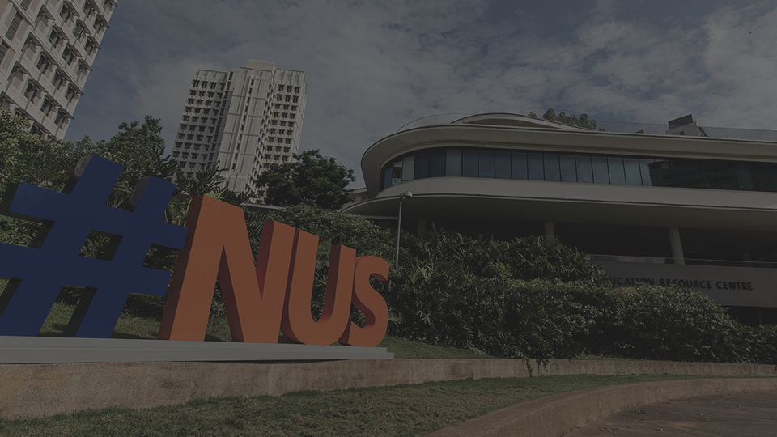
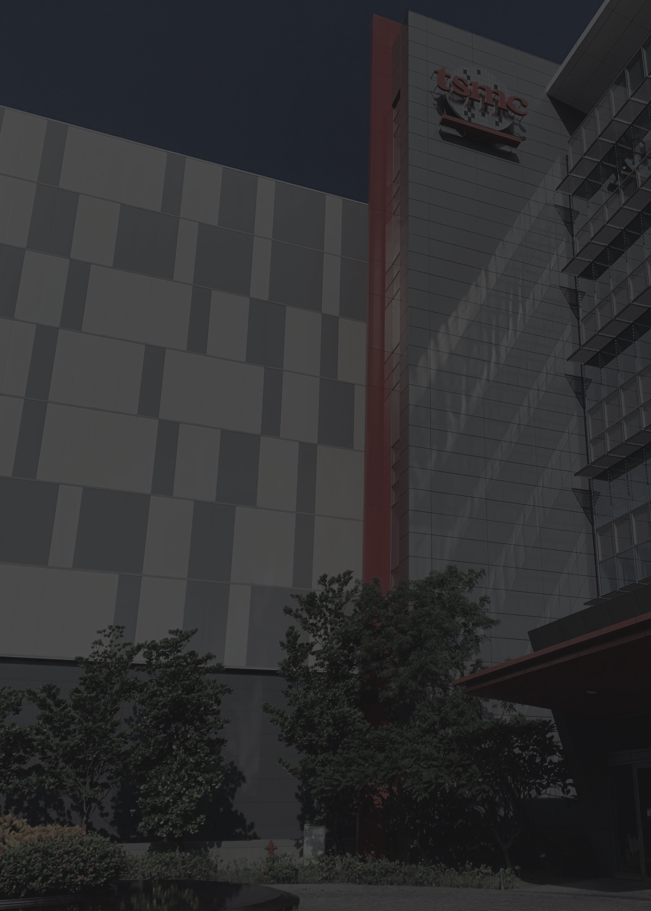
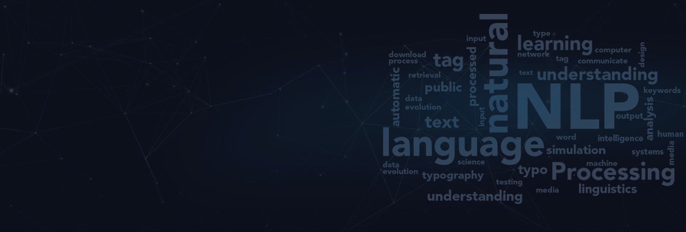
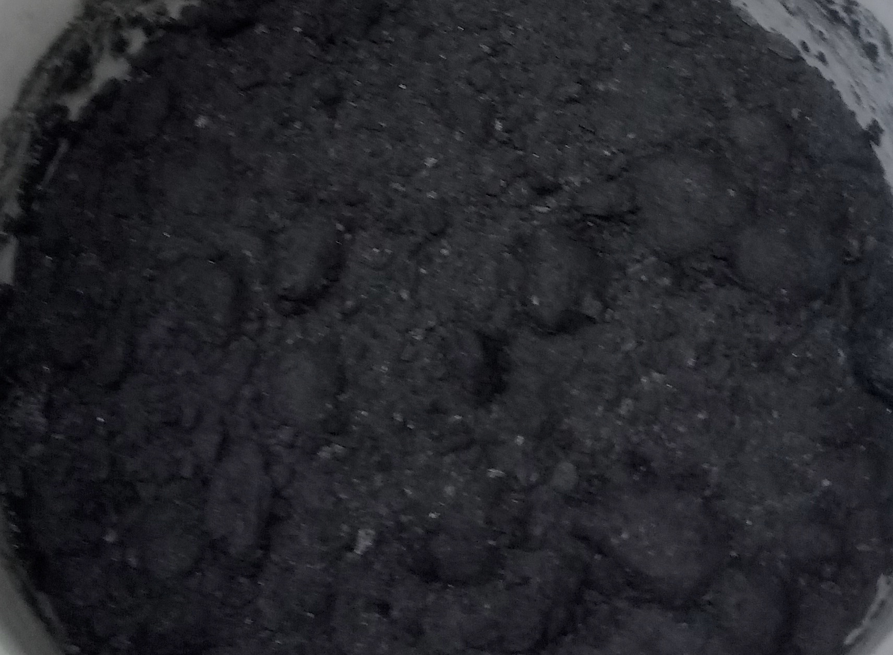

Top

About Me
A Taiwanese student who, against all odds, pursued his dream of spending his life in front of a glowing rectangle and typing gibberish some people call code on it. I (still) have a fresh liver, and (hopefully) many years to come. Currently interested in doing research and development work. Occasionally dabbles in mathematics, physics, and (formerly) chemistry.
Teaching Assistant @ NUS
- Taught Data Structures and Algorithms lab sessions for three semesters
- Provided consultation and pseudocode grading for students

IT Intern @ TSMC
- Created Dockerized discussion forum for in-house deployment
- Trial tested mechanism for database hosting and connection on Kubernetes
- Adapted access dashboard interface for Kubernetes hosted NoSQL database

Neural Logical Structure Recovery in Scholarly Articles
- Supervised by A/P Kan Min Yen
- Scientific Document Processing subgroup
- Explore neural network usage in transfer learning for logical structure extraction
- Adapt multi-level attention framework for contextual extraction
- Adapt deep semi-supervised learning techniques for model enhancement

Synthesis and Applications of Porous Bio-Carbon on Electric Components
- Supervised by Professor Lin Hung-Ping
- Tested durability of aluminum-carbon batteries
- Experimented on bio-carbon based EDLCs
- Created RC circuit based capacitance meter on Arduino

BLARB
A.C.E.
NCIS
Contact Me
© Huang Po Wei. Design: HTML5 UP.